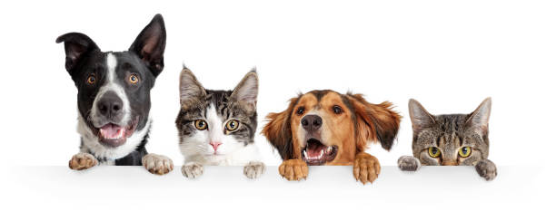

<!-- <!DOCTYPE html>
<html lang="en">
<head>
    <meta charset="UTF-8">
    <meta http-equiv="X-UA-Compatible" content="IE=edge">
    <meta name="viewport" content="width=device-width, initial-scale=1.0">
    <link href="style.css" rel="stylesheet">
    <title>Welfare</title>
</head>
<body id="grad2"> 
    <header id="grad">
        
        <nav>
            <ul class="nav-menu">
                <li class="menu"><a href="home.html">Home</a></li>
                <li class="menu"><a href="every_child's_voice.html">Every Child's Voice</a></li>
                <li class="menu"><a href="homeless_haven.html">Homeless Heaven</a></li>
                <li class="menu"><a href="animal'shelter.html">Animal Shelter</a></li>
                <li class="menu"><a href="aboutus.html">About Us</a></li>
                
            </ul>
        </nav>
        <a class="donates" href="#"><button>DONATE NOW</button></a>
    </header>
    <div class="slider">
        
    </div>

<h3>BE SOMEONE'S PILLAR TODAY</h3><hr width="100" color="red">
<div class="myDiv">
<h5>Hope is the pillar that holds up the world. Hope is the dream of a walking man.</h5>
</div>

<h3 style="text-align: center;">
    <strong>LET'S SUPPORT OUR LOCAL RESCUE</strong></h3>
<hr width="150"  color="red">
<h5 >
<strong>Be a voice for the voiceless</strong>
</h5>

<div class="box">
    <div class="three">
        <br>
        <div class="text">
        <p><strong><em>Street Dogs might <br>
            look wild in most society but they<br>
             inspite not being ,our pet protect<br>
             the colony at night hence it is<br>
             our duty to pay them back by<br>
             taking care of them keeping small<br> 
            pots with water or our given  food<br>
             gives them the food for the day<br>ss
            ...ARE HELPFUL WAYS.</em></strong>.</p>
    </div></div>
    <div class="three">
        <br>
        <div class="text">
        <p><em><strong>Cow is the Mother<br>
            of Indian mankind protection<br> 
            of the cow means protection <br>
            of the whole creation of GOD.<br>
            Cows are so precious for  the<br>
             Nature as well as Human Being.<br>
             Cow's  dung is used in <br>
            agriculture and milk is <br>
            useful for Beings.</strong></em>.</p>
    </div></div>
  
    <div class="three">
        <br>
        <div class="text">
        <p><strong><em>Cats are now famous<br> 
            on the internet for being too <br>
            human-like.They exhibit grumpy<br>
             behaviour and are often accused<br>
             of not caring for their individual<br>
             owners. But in reality cats are <br>
            quite loving and caring.<br>
             They may not often portray these<br> 
            emotions, but they do mean well.</em></strong>.</p>
    </div></div>
</div>  

    <div class="container">
        <div class="two">
            <h2>HOW CAN WE HELP?</h2>
            <ul type=disk>
                <li><em>Donation</em></li>
                <li><em>Become Volunteer</em></li>
                <li><em>Provide Food</em></li>
                <li><em>Adopt Them</em></li>
            </ul>
        </div>
        <div class="two">
      
        </div>   
    </div>

<h1> NGO-(Non Governmental Organization)</h1>
<p>
    <strong><em>These are the  organization that is neither<br>
         a part of a government nor a profitable business. <br>
         It is  created to solve the problems of poor  Animals,
          the environment, etc. <br>These are the trust organization. 
          These organizations revenue depends on the funds.<br> NGO is
           also called a Non-Profitable Organization (NPO).<br></em></strong>
    </p>

<div class="container">
    <div class="six">
        <ul style="padding-top: 10%;">
            <li onclick="document.getElementById('myImage').src='https://www.google.com/maps/embed?pb=!1m23!1m12!1m3!1d113863.26362276939!2d75.66152318551227!3d26.89629036179193!2m3!1f0!2f0!3f0!3m2!1i1024!2i768!4f13.1!4m8!3e6!4m0!4m5!1s0x396db55b2743fd7f%3A0xc8fe9f28dba4967e!2sGo%20Nirvana%20Foundation%2C%20Village%2C%20Rampura%20Rd%2C%20opposite%20Koral%20Arihant%20Building%2C%20near%20Patrakar%20Colony%2C%20Mansarovar%2C%20Jaipur%2C%20Rajasthan%20302020!3m2!1d26.8368613!2d75.727882!5e0!3m2!1sen!2sin!4v1672697571689!5m2!1sen!2sin'">GO NIRVANA FOUNDATION</li>
            <li onclick="document.getElementById('myImage').src='https://www.google.com/maps/embed?pb=!1m18!1m12!1m3!1d3558.23141713622!2d75.72937531454751!3d26.89614976727894!2m3!1f0!2f0!3f0!3m2!1i1024!2i768!4f13.1!3m3!1m2!1s0x396db4bc0bbaa2a5%3A0x80f4e1c3a9055981!2s57%2C%20Jhotwara%20Rd%2C%20Heera%20Nagar%20Extension%2C%20Amrapali%20Circle%2C%20Vaishali%20Nagar%2C%20Jaipur%2C%20Rajasthan%20302024!5e0!3m2!1sen!2sin!4v1672697316922!5m2!1sen!2sin'">HOPE AND BEYOND</li>
            <li onclick="document.getElementById('myImage').src='https://www.google.com/maps/embed?pb=!1m18!1m12!1m3!1d3560.2783350711616!2d75.74747221454612!3d26.831098170059015!2m3!1f0!2f0!3f0!3m2!1i1024!2i768!4f13.1!3m3!1m2!1s0x396db57ac44ce2e3%3A0xd3f1209a496907b5!2sISKCON%20Temple%2C%20Jaipur!5e0!3m2!1sen!2sin!4v1672699153124!5m2!1sen!2sin'">ISKON GAUSHALA</li>
            <li onclick="document.getElementById('myImage').src='https://www.google.com/maps/embed?pb=!1m18!1m12!1m3!1d1779.838252370607!2d75.78345460799761!3d26.85023963883063!2m3!1f0!2f0!3f0!3m2!1i1024!2i768!4f13.1!3m3!1m2!1s0x396db5bff5116307%3A0xd731a665ddbd6f9f!2sMaharani%20Farm%2C%20Gayatri%20Nagar%20A%2C%20Gayatri%20Nagar%2C%20Jaipur%2C%20Rajasthan%20302020!5e0!3m2!1sen!2sin!4v1672698760009!5m2!1sen!2sin'">HELP IN SUFFERING</li>
        </ul>

    </div>
    <div id="grad3">

        <iframe id="myImage" src="https://www.google.com/maps/embed?pb=!1m18!1m12!1m3!1d227749.05321195384!2d75.62574555215417!3d26.885115144105413!2m3!1f0!2f0!3f0!3m2!1i1024!2i768!4f13.1!3m3!1m2!1s0x396c4adf4c57e281%3A0xce1c63a0cf22e09!2sJaipur%2C%20Rajasthan!5e0!3m2!1sen!2sin!4v1672305262419!5m2!1sen!2sin" width="500" height="350" style="border:5%;" allowfullscreen="" loading="lazy" referrerpolicy="no-referrer-when-downgrade"></iframe>

                 
    </div>
</div>  

<p style="text-align: center";> <button >DONATE NOW</button></p><br>
</body>
<footer>
    <div class="footer">
        <div class="footer_three" >
        <h3 style="color: aliceblue;">Our Work</h3>
        <p style="color: aliceblue;">Corporate partnership<br>
           Volunteering<br> <br>
            Events<br> <br>
            Donate<br></p>
        </div>
        <div class="footer_three" >
            <h3 style="color: aliceblue;">About us</h3>
            <p style="color: aliceblue;">Our Team<br> <br>
                                           Contact Us<br> <br>
                                          Image Gallery<br></p>
                        <br>
        </div>
        
        <div class="footer_three" >
            <h3 style="color: aliceblue;">Find us</h3>
            <a href="#"><i class="fab fa-facebook-f" style="color: aliceblue;">Facebook</i></a><br>
              <a href="#"><i class="fab fa-instagram">Instagram</i></a><br>
              <a href="#"><i class="fab fa-twitter">Twitter</i></a><br>
              <a href="#"><i class="fab fa-youtube">Youtube</i></a><br>
              <a href="#"><i class="fab fa-linkedin-in">Linkedin</i></a><br>
              <a href="#"><i cass="fab fa-linkedin-in">E-mail Id</i></a><br></p>
</div>

        
        </div>
    </div>

</footer>

<script type="text/javascript" src="script.js"></script>
</html> -->